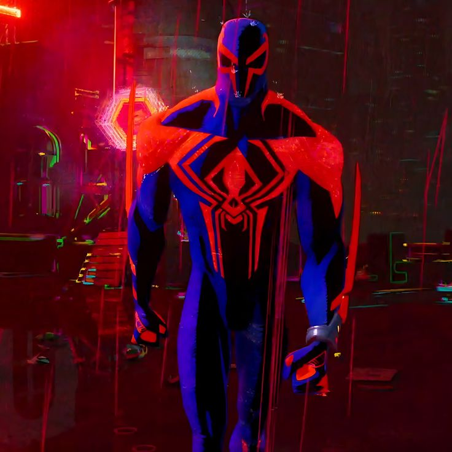

Miguel O'Hara
Miguel O'Hara is the superhero Spider-Man of the year 2099.
He is the leader of the multiversal Spider-Society which strives to keep the "canon" intact.
As Spider-Man, Miguel would have a lot of adventures along with his Artificial Intelligence, LYLA.
With both of them protecting Nueva York, sometime after becoming Spider-Man,
Miguel would discover the multiverse and decide to monitor it since then alongside LYLA.
More Information about Miguel O'Hara
